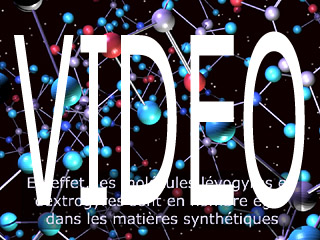

|
|
Navig.
page/section


_____
|
|
Pages soeurs
I, A propos des liants
II, Bulles, siccativ., struct. élec.
III, Caséine, phosphore, dissociation
IV, Les orbitales
V, L'aérogel
VI, Polarisation de la lumière
VII, Sfumato et diffusion Rayleigh
VIII, Les interférentielles
IX, Dextrine, farine et chiralité
X, L'ocre bleue
XI, Les métamatériaux
XII, Le jaunissement
XIII, Laser etc.
XIV, L'holographie
XV, L'holographie numérique
XVI, Extérieur, intérieur, chaux
XVII, L'électrolyse et les ions
XVIII, L'électricité, un peu plus loin
XIX, Oxydation, métaux
XX, Les échelles
XXI, Nature et évolution des résines
XXII, Le mouillage pigmentaire
XXIII, La molette
XXIV, Blanche neige
XXV, Lumière et matière
XXVI, Magnétisme
XXVII, Ambre et vieilles branches
XXVIII, L'origami miroir
XXIX, Le feu
XXX, Peau du métal
XXXI, La ville en un souffle
XXXII, Oxyder des matériaux
XXXIII, Ocre bleue, une solution
_____
|
Copyright © www.dotapea.com
Tous droits réservés.
Précisions cliquer ici
|
|
| |
|
|
Les
dialogues sur la physique-chimie
appliquée
aux arts
Chapitre
IX
Dextrine, farine et chiralité
|
 |
dial dial
dial
Ce chapitre des
Dialogues de Dotapea
est
une discussion entre Jean-Louis, physico-chimiste au CNRS, et un
candide, Emmanuel.
Les personnages sont réels, la
discussion aussi. Elle peut reprendre à tout moment et ce texte peut s'allonger.
Tout d'abord une introduction vidéo par le biais du canal
web de ArtRéalité.

|
Emmanuel :
Je voudrais te poser une question en relation à la fois avec la peinture et avec un sujet que
nous avons abordé récemment : qu'appelle-t-on exactement "dextrogyre" (la
dextrine par exemple) et "lévogyre" ? Qu'est-ce qui tourne à droite ou à
gauche exactement ? Est-ce en relation avec la polarisation
de la lumière ?
Jean-Louis : Oui, ça a un rapport avec la polarisation.
Selon qu'une molécule est
superposable à son image dans un miroir ou pas elle est dite achirale ou
chirale. Une main n'est pas superposable à son image, puisque qu'une main
droite devient une main gauche dans l'image [voir vidéo]. Cette propriété de chiralité
est liée à la présence d'un atome dit "asymétrique" dans la structure
moléculaire. Deux molécules peuvent avoir exactement la même formule
chimique et ne différer que par la structure de cet atome asymétrique. Ce
sont des "énantiomères".
Emmanuel :
Si je ne dis pas une sottise, ce sont des isomères qui ont une version D et
une version L alors que d'autres isomères (diastéréoisomères, épimères,
etc.) n'ont pas des formes liées à ces géométries de miroirs. Est-ce que
c'est bien ça ?
Jean-Louis : Oui, c'est ça.
Le fait qu'une molécule soit
chirale entraîne notamment qu'elle soit "optiquement active", ce qui veut
dire qu'elle agit sur la polarisation d'une onde lumineuse incidente. Ca a
été découvert par Pasteur, sur l'acide tartrique. Si on fait traverser une
solution d'acide tartrique "naturel" c'est-à-dire organique à un rayon
lumineux polarisé rectilignement (grâce à un polariseur), on remarque que la
direction de polarisation tourne lors de la traversée de la solution. C'est
le "pouvoir rotatoire".
Emmanuel :
Ce qui surprend, c'est que cela ait pu être repéré à cette
époque-là. Comment mesure-t-on de tels phénomènes ? Et le mouvement
rotatoire se poursuit après la traversée ? Il y a une sorte d'inertie ?
|
|
Dans
la lumière, qu'est-ce qui tourne ?
|
|
Jean-Louis : Ca serait mignon mais pas du tout. Ca s'arrête en 10-15
secondes... Il n'y a pas d'inertie, simplement tous ces phénomènes optiques
ont lieu à des échelles de temps de l'ordre de 10-15 secondes, le
temps moyen pour émettre ou absorber un photon.
On imagine la lumière un peu
comme un jet d'eau qui sort d'un tuyau. Ce n'est vrai que dans le vide. Dans
un milieu quelconque, les photons sont continûment absorbés par les atomes
du milieu et réémis à l'identique. La lumière que tu vois "sortir" d'une
vitre n'est pas celle qui y est entrée!
Le phénomène de polarisation ou
de rotation du plan de polarisation s'arrête sur le dernier atome du milieu
traversé, en 10-15 secondes.
Pour que le phénomène soit décelé
il faut faire traverser une grande longueur d'échantillon. J'ai vu des
polarimètres qui avaient un tube d'un mètre de long. Plus habituellement ces
instruments mesurent un bonne vingtaine de centimètres.
La rotation va vers la droite
(dextrogyre) ou la gauche (lévogyre) dépend entre autres de la
concentration, de la longueur traversée, de la longueur d'onde de la
lumière, de la température, etc.
|
|
La
lumière se transmet de différentes manières |
|
Pour revenir aux expériences de
Pasteur, miracle, une solution d'acide tartrique "de
synthèse" n'a aucun pouvoir rotatoire. Cet argument a été utilisé par
les créationnistes qui disaient à l'époque que même si les molécules étaient
identiques, c'était la trace de la main de Dieu qui faisait que les
molécules naturelles avaient un pouvoir rotatoire, alors que celles crées
par l'homme n'en avaient pas.
Pasteur a montré que la synthèse
était en fait "symétrique" et qu'elle produisait les deux sortes d'acide
tartrique. Il a pu les trier avec des petites pinces et un bon microscope
(les cristaux sont très légèrement différents) et montrer qu'il y avait des
cristaux lévogyres, dextrogyres, et que la solution faite avec le mélange
des deux n'avait aucun pouvoir rotatoire parce que ça se compensait
exactement.
Il se trouve que l'immense majorité des molécules biologiques sont
optiquement actives. Je crois que l'on ne sait pas pourquoi.
Et le plus fort, c'est que une seule des deux formes
moléculaires est active. Si tu manges du sucre "gauche" ton petit corps ne
pourra rien en faire, sauf l'éliminer. Et il n'a d'ailleurs pas le
goût de sucre...
La manip de Pasteur était
vraiment très belle.
La synthèse dite "asymétrique", qui produit directement
les molécules sans avoir à trier manuellement les cristaux est un domaine
très actif et très difficile. Imagine que pour l'immense majorité des
médicaments, la moitié de ce que tu avales (mais qu'il a
fallu synthétiser et purifier au prix fort) ne sert à RIEN !
Emmanuel :
Incroyable ! On a tendance à penser a priori que nos ventres ne font pas la
différence vu la force des acides, l'activité bactérienne et la chimie
hépatique.
|
|
Les
bactéries ont des préférences |
|
Jean-Louis : La plupart des réactions biologiques ne sont pas des réactions
"brutales" qui demanderaient un apport d'énergie sous forme de chaleur,
comme dans un labo de chimie. Ce sont des réactions enzymatiques qui
fonctionnent par des mécanismes clé/serrure. Donc si la clé est tournée dans
le mauvais sens, la serrure ne s'ouvre pas.
En corollaire il y a les "fausses
clés" qui ne sont pas faite pour ça mais qui rentrent quand même dans la
serrure. Par exemple la molécule de chloroforme, CH2Cl2
n'a aucun rapport avec le sucre mais elle rentre dans les mêmes récepteurs
qu'elle stimule en outre vingt fois plus que le vrai sucre !
Ou la molécule d'oxyde de carbone
qui se bloque dans la serrure de l'hémoglobine, etc.
Tout ça est assez compliqué,
notamment au niveau moléculaire. Ca s'appelle la stéréochimie et je ne
connais pas tout, de loin.
|
|
La
clé, une question de forme |
|
Emmanuel :
On parle d'un liant que l'on nomme "dextrine" et qui semble être un dérivé
de la farine (via l'amidon semblerait-t-il). L'intérêt de la dextrine est-il lié à
une réaction enzymatique ? Par exemple, dans le cas de la peinture "à la
bière", on peut supposer que des levures interviennent.
Parce que celles-ci
ont des réactions uniquement avec les versions "dextres" ?
|
|
Le
traitement à la levure et le traitement sans levure |
|
Jean-Louis : Cela s'appelle dextrine à cause du pouvoir rotatoire
"dextrogyre" des solutions aqueuses que l'on prépare. Comme c'est d'origine
organique, il n'existe "naturellement" que cette forme. Ainsi que tu le sais
maintenant, si il y avait une forme "lévogyre", elle ne serait pas
métabolisable, donc inutile pour les organismes vivants. Si on fait la
synthèse d'une telle molécule, sauf à prendre des précautions très
contraignantes et très particulières, on fabriquera évidemment tous les
isomères optiques.
Comme
cette molécule est plus complexe que l'alanine dont nous avons parlé [voir
vidéo] et
qu'il y a plusieurs centres chiraux, il y en aura de plusieurs sortes (à
tout hasard je dirais au moins 4 ou 5). Pour faire de la colle elles seront
probablement toutes aussi bonnes, mais biologiquement une seule
fonctionnera.
Emmanuel :
Les décorateurs de théâtre et sans doute d'autres professionnels de
la décoration feraient (sous réserve d'une enquête plus approfondie) lever la farine avec de la bière,
c'est intégralement lié à la biologie. L'aspect dextrogyre ne semble
déterminant en peinture ou en collage que sur le versant enzymatique, pas du
tout par l'action qu'il a sur la lumière.
Jean-Louis : Très certainement. Notre oeil n'est pas sensible à la
polarisation de la lumière.
Emmanuel : C'est le levage qui semble
faire une différence dans la pratique en peinture. Sans parler de la
possibilité de cuisson. Certains artistes travaillent sur du pain et
obtiennent un résultat finalement assez durable.
Sans usage de levure, on fait
surtout de la peinture à la farine pour enfants.
Jean-Louis : Comme c'est comestible, ça explique sans doute
l'utilisation dans ces peintures.
|
|
En
marge de ce dialogue, lire un
passage de l'article Gaz, liquides, solides, les phases de la
matière : bière et CO2 ou autres substances, comment mêle-t-on du gaz à du liquide ? |
|
A suivre...
Chapitre suivant :
X, L'ocre bleue |
Retour
début de page
|
|

 Communication
Communication


|
|